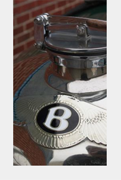

1933 MG J2
The MG J-type was produced by the MG Car company from 1932 to 1934. This 2-door sports car used an updated version of the overhead camshaft, crossflow engine, used in the 1928 Morris Minor and Wolseley.
The chassis was from the D-Type with suspension by half-elliptic springs and Hartford friction shock absorbers all round with rigid front and rear axles. The car had a wheelbase of 86 inches (2184 mm) and a track of 42 inches (1067 mm). Most cars were open two-seaters, but a closed salonette version of the J1 was also made, and some chassis were supplied to external coachbuilders. The open cars can be distinguished from the M type by having cut-away tops to the doors.
The J2 was the commonest car in the range.
Early cars had cycle wings, but these were replaced in 1933 by the full-length type that was typical of all sports MGs until the 1950s TF. The top speed of a standard car was 65 mph (105 km/h),but a specially prepared one tested by The Autocar magazine reached 82 mph (132 km/h). The car cost £199. There were a few serious failings of the J2, most seriously that it only had a two-bearing crank shaft which can break if over-revved.
Another problem is that it is not fitted with hydraulic brakes, but has Bowden cables to each drum. These require no more pedal force than any other non-power-assisted drum brake, provided that they are well maintained. The drums themselves are small and even in period it was a common modification to replaced them with larger drums from later models. The non-synchromesh gearbox takes some getting used to, as for any car of this period, but with its short gear stick it becomes second nature to double de-clutch and rare to grind the gears.